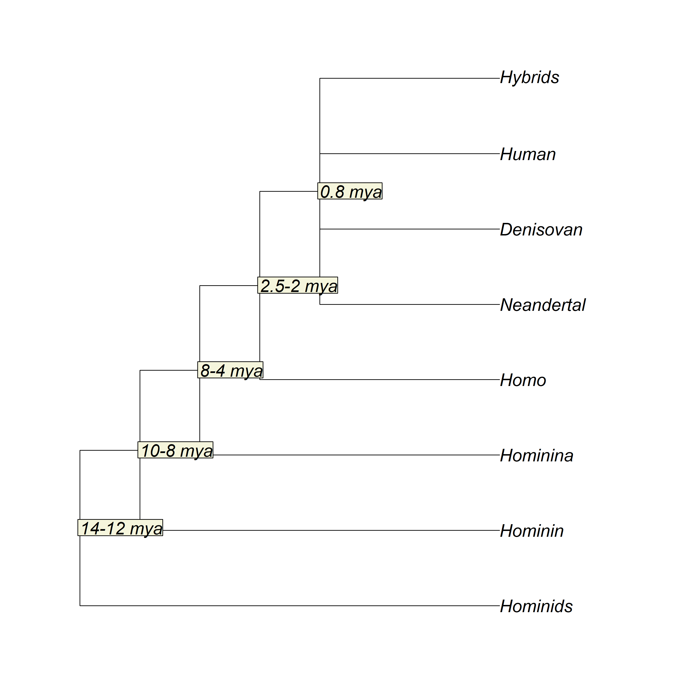
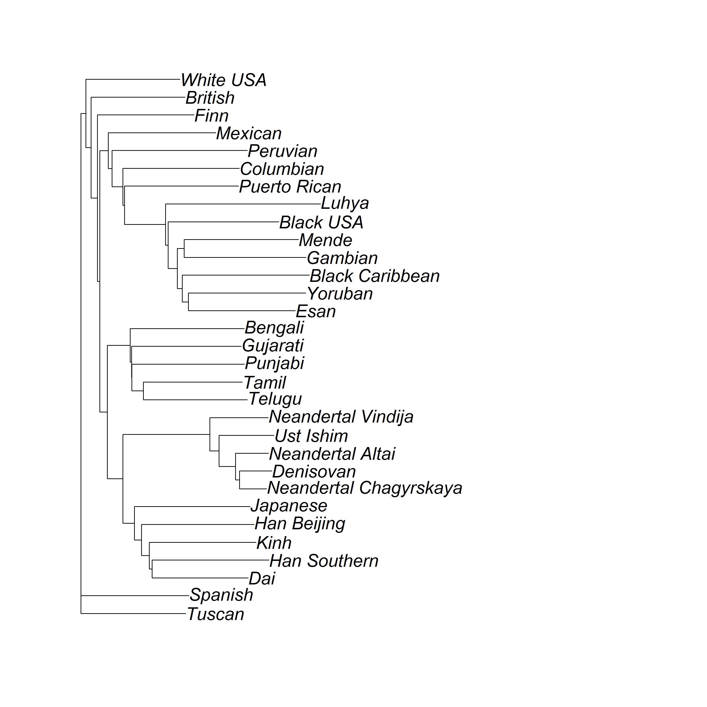

Genetic and functional odorant receptor variation in the Homo lineage
Executive Summary
Problem: Did Neanderthals and Denisovans smell the world differently than we do? There is evidence to suggest there are differences between humans and other apes in terms of olfactory genetics, and there is variation across living human populations that is potentially linked, in some instances, to dietary niche and habitat. Traditional approaches to inferring gene function in extinct species rely on computational methods alone – leaving the actual functional question unanswered.
Approach: We took a transformative approach combining ancient DNA analysis with experimental biology to directly test OR function across the Homo lineage. Using paleogenomic sequence data from three Neanderthal genomes (Altai, Chagyrskaya, Vindija), one Denisovan, and one ancient human (Ust’-Ishim), we identified novel variants in 30 OR genes with known human receptor-odor relationships. We then physically reconstructed the ancient OR proteins using chimeric PCR and measured their functional responses to odorants in luciferase cell assays – the first experimental validation of gene function in ancient hominins at this scale.
Insights: Extinct lineages had highly conserved OR sequences compared to contemporary humans, but OR function differed more in sensitivity than in specificity. Neanderthal variants generally disrupted OR function, reducing sensitivity to green, floral, and spicy odors. Denisovan variants increased sensitivity, particularly to sweet (vanilla, honey-like) and sulfurous odors – up to four times greater than in contemporary humans. Most OR variation was shared across the genus Homo before global dispersal, suggesting a largely shared olfactory world with lineage-specific tuning following migrations from Africa.
Significance: This work establishes the first broad experimental framework for testing functional evolutionary adaptation in extinct species using reconstructed proteins. The finding that our genus shares a conserved olfactory repertoire – with functional differences in sensitivity rather than the range of odors detected – has implications for understanding how olfaction shaped dietary adaptation, ecological niche expansion, and the success of Homo as a globally distributed genus.
Key Findings
- Neanderthal and Denisovan OR sequences varied less than contemporary human ORs, but the genus shares a broadly overlapping olfactory repertoire
- OR variants in extinct lineages altered sensitivity more than specificity – Neanderthals were less sensitive, Denisovans more sensitive to several odor classes
- Denisovans showed markedly increased sensitivity to sweet and sulfurous odors (vanillin response 10x human; octanethiol 4x human), suggesting possible ecological tuning to energy-dense foods
- Extinct lineages clustered together and closest to living East Asian populations, consistent with known introgression signatures
- Contemporary humans show greater OR genetic diversity than extinct lineages, consistent with relaxed selection and broad ecological adaptation following African dispersal
de March, C.A., Matsunami, H., Abe, M., Cobb, M., & Hoover, K.C. (2023). Genetic and functional odorant receptor variation in the Homo lineage. iScience, 26(1), 105908. DOI: 10.1016/j.isci.2022.105908
Research Question
Do novel variants in the paleogenomes of Neanderthals and Denisovans result in functionally distinct olfactory repertoires compared to contemporary humans?
Evolutionary context: The human genus Homo underwent the most radical ecological niche expansion of all primates when migrating out of Africa and adapting to diverse global environments. Denisovans and Neanderthals ancestors dispersed from Africa earlier than contemporary humans (~750,000 versus 65,000 years ago) and separated from each other ~300,000 years ago.
Figure 1. Phylogenetic tree of Hominids.

Research Answers
OR variation across the Homo lineage
Contemporary humans show substantially more OR genetic variation than extinct lineages. Nucleotide variants in extinct lineages averaged 0.11% across all 30 genes sampled, compared to 0.82% in the 1000 Genomes dataset. The fixation index (Fst) comparing 1000 Genomes populations to ancient samples averaged 11% – above the 4% mean seen within 1000 Genomes populations alone – indicating meaningful structural differentiation between living and extinct lineages that reflects both genetic drift and conservation.
Figure 2. Percent OR variation by gene and population for DNA variants (left) and amino acid variants (right).

Interpretation: Ancient samples (far left columns) show markedly lower variation than any living population across nearly all 30 genes. The pattern is consistent across both DNA and protein levels. A small number of genes show elevated variation in specific ancient lineages, corresponding to the novel variants subjected to functional testing.
Phylogenetic relationships across Homo
Concatenated amino acid sequences for the 30 sampled ORs place extinct lineages in a clade closest to living East Asian and South Asian populations – groups that carry known introgression signatures from both Neanderthals and Denisovans. Vindija Neanderthal was the most phylogenetically distinct of the three Neanderthal samples, an unexpected finding given that genome-wide studies have placed Vindija closest to Chagyrskaya.
Figure 3. Cladogram based on full amino acid sequences for 30 odorant receptos in ancient lineages and 1000 Genomes populations.

Interpretation: Based on the odorant receptors in this study, Neadertals and Denisova were closest to the extinct human Ust’-Ishim, suggesting a more recent expansion of the ORs studied.Functional testing: sensitivity differs more than specificity
Of the 11 genes containing 14 novel variants subjected to functional testing, five ORs were functionally different from contemporary humans (OR1C1, OR2C1, OR5P3, OR10G3, OR10J5), one was the same (OR1A1), and two had no identifiable ligands in our panel (OR2B11, OR6P1). The primary finding is that novel variants altered dose-response sensitivity rather than the range of odors detected – extinct hominins likely smelled the same odors we do, but at different thresholds.
Figure 4. Regression results for OR dose responses comparing human and extinct lineage ORs.

Interpretation: Panels A and B show the correlation between human and Neanderthal (A) and Denisovan (B) OR responses. Neanderthal responses are uncorrelated with human responses (R² = 0.05), while Denisovan responses are strongly correlated (R² = 0.87) but with higher overall sensitivity. Panels C and D show response distributions by lineage and by individual OR gene. Denisovan ORs show consistently higher responses than human equivalents; Neanderthal ORs cluster below human responses.
Structural basis of functional differences
Novel variants were mapped onto a homology model of the human consensus OR to understand their structural context. Variants in conserved functional regions (such as the MAY³·⁴⁸DRY motif in Chagyrskaya Neanderthal OR1C1) disrupted OR activation. Denisovan variants in OR10G3 and OR2C1 were located near or within the ligand binding cavity, likely explaining their increased sensitivity to vanillin and octanethiol respectively.
Figure 5. Homology model of the human consensus odorant receptor with variant locations and dose-response panels for functionally tested ORs.

Interpretation: Each colored ring on the transmembrane model marks the location of a novel variant, color-coded by lineage (orange = human, blue = Denisovan, light purple = Vindija Neanderthal, dark purple = Chagyrskaya Neanderthal). Dose-response panels show OR activation (luciferase/renilla ratio) across seven odorant concentrations. Statistical significance between human and ancient lineage versions is shown (*** p<0.001, ** p<0.01, * p<0.05, ns = non-significant). Variants near conserved activation residues tend to reduce function; variants near the binding cavity tend to increase sensitivity.
OR activity index across lineages and odor classes
Comparing OR activity index values – which combine potency and efficacy – across lineages and odor categories reveals the directional pattern of functional differences. Denisovan ORs were most responsive to balsamic and sweet odors (vanillin: 10.28 vs. 3.57 human; allyl phenyl acetate: 13.87 vs. 13.12 human) and sulfurous odors (octanethiol: 4.65 vs. 0.94 human). Neanderthal OR1C1 showed a weak response to androstadienone and OR5P3 showed no response to odors that produced strong human responses.
Figure 6. OR activity index comparison across human and extinct lineages by odorant.

Interpretation: Color coding from low (purple) to high (mustard) highlights the elevated Denisovan responses to balsamic, sweet, and sulfurous odor classes relative to contemporary humans. The Denisovan heightened sensitivity to sweet odors may reflect evolutionary tuning to energy-dense foods – honey and vanilla-associated compounds are among the strongest responses. Neanderthal activity indexes are generally lower than human equivalents across tested odors, consistent with the reduced functional sensitivity seen in the regression analysis.
Study Design
Data Source: Paleogenomic sequence data from the Max Planck Institute for Evolutionary Anthropology Leipzig – 2013 and 2016 VCF datasets covering three Neanderthal genomes (Altai, Chagyrskaya, Vindija), one Denisovan (Denisovan 3), and one ancient human (Ust’-Ishim). Contemporary human data from the 1000 Genomes Project (Phase 3), comprising 2,500+ individuals across 26 populations. All ancient genomes used hg19/GRCh37 as the reference. Ancient samples were restricted to Max Planck-generated data to minimize noise from different variant-calling methods and damaged DNA handling approaches.
Data Handling: Analysis focused on 30 OR genes with known human receptor-odor relationships and well-established agonist responses. Gene regions were trimmed to protein-coding sequence only. Only variants with minimum genotype quality GQ20 were used. Insertions and deletions were excluded. For 1000 Genomes, consensus sequences were generated for each of the 26 population groups to allow comparison with individual-level ancient samples. Variants shared with 1000 Genomes were distinguished from novel ancient variants using a hash function against the 1000 Genomes variant data.
Analytical Approach:
- Sliced ancient genome VCFs by chromosomal coordinates for each of the 30 OR genes using VCFtools on the University of Alaska Fairbanks HPC (
HCscript-scrape_ancient_VCF_data_from_server.txt); repeated for each ancient sample (Altai, Chagyrskaya, Vindija, Denisovan, Ust’-Ishim); output VCFs were used to generate per-gene DNA and amino acid FASTA sequence files - Identified DNA and amino acid variants relative to the human reference using pairwise alignment in Biostrings; called novel variants not present in 1000 Genomes using a hash function against the 1000 Genomes VCF data
- Calculated percent OR variation per gene per population (variant count / gene basepairs) for DNA and amino acid levels; calculated Fst using gdsfmt and SNPRelate
- Inferred phylogenetic relationships across populations using concatenated amino acid sequences for all 30 genes; constructed neighbor-joining tree using ape, seqinr, and phylogram
- Reconstructed ancient OR proteins using chimeric PCR with site-directed mutagenesis; screened against seven odorants per OR in Hana3A cells using a luciferase reporter assay
- Conducted dose-response assays for top screening responses across seven odorant concentrations; computed Activity Index (|logEC50| x efficacy) per OR/odorant pair
- Assessed cell surface expression of reconstructed ORs by flow cytometry to confirm protein trafficking to cell surface
- Built homology model of human consensus OR from alignment of 391 human OR sequences against four GPCR crystal structures; mapped novel variant locations onto model
Project Resources
Repository: old-noses
Data: Functional assay data (raw and analyzed) for 2013 and 2016 VCF datasets available via figshare: 10.6084/m9.figshare.21542943. Note: Paleogenomic sequence data from Max Planck Institute for Evolutionary Anthropology (2013 and 2016 VCFs). Contemporary human data from 1000 Genomes Project Phase 3.
Code:
HCscript-scrape_ancient_VCF_data_from_server.txt– HPC script (VCFtools) to slice ancient genome VCFs by chromosomal coordinates for each OR gene and ancient sample; upstream step producing FASTA input files for R pipelinerevised-dna.R,revised-aa.R,revised-figures.R– consolidates original analysis into three scripts
Project Artifacts:
- DNA FASTA files (n=30): per-gene sequence files for all samples in
fastas-dna/(OR[GENE]-all with humref.fa); cleaned version generated via script - Amino acid FASTA files (n=30): per-gene sequence files for all samples in
fastas-aa/(or[gene]-aa-all with humref.fa); cleaned version generated via script - Figures (n=5): available via figshare as well: 10.6084/m9.figshare.21542943
Environment:
renv.lockandrenv/– restore withrenv::restore()
License:
- Code and scripts © Kara C. Hoover, licensed under the MIT License.
- Data, figures (except homology model and odorant activity table), and written content © Kara C. Hoover, licensed under CC BY-NC-ND 4.0.
Tools & Technologies
Languages: R | Bash
Tools: VCFtools | BCFtools | HPC (University of Alaska Fairbanks)
Packages: dplyr | tidyr | ggplot2 | readxl | Biostrings | pwalign | ape | seqinr | phylogram | viridis | ggpubr
Expertise
Domain Expertise: paleogenomics | olfactory science | human evolutionary genetics | population genetics
Transferable Expertise: Demonstrates end-to-end integration of computational genomics and experimental biology to answer evolutionary questions – a methodological framework applicable to any study testing functional hypotheses about genetic variation in extinct or non-model species.